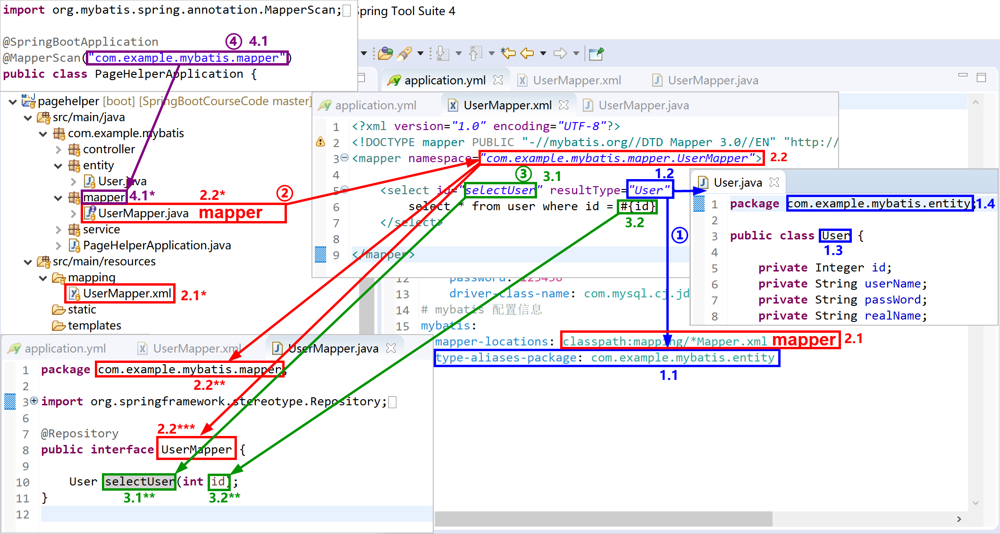

5.2 Spring Boot集成MyBatis
MyBatis 是一款优秀的持久层框架，它支持定制化 SQL、存储过程以及高级映射。MyBatis 避免了几乎所有的 JDBC 代码和手动设置参数以及获取结果集。
MyBatis 可以使用简单的 XML 或注解来配置和映射原生类型、接口和 Java 的 POJO（Plain Old Java Objects，普通老式 Java 对象）为数据库中的记录。
官方参考文档，有中文版，描述非常详细，在这里，能解决你的所有疑问。
由于MyBatis在系统复杂性、便捷性和可控性方面找到了一个较好平衡。能够满足DBA对数据库的架构设计，也能满足开发人员对复杂SQL的编写，同时又能满足技术经理/架构师对SQL调优的需求。所以，最近几年来，MyBatis使用得越来越广泛。
要想掌握MyBatis，必须熟悉其几个重要的概念：
- mapper：映射器，里面存放了增删改查等映射语句和其对应的java接口（在运行时使用 动态代理），通常情况下，我们指一个mapper是在说这个mapper的xml文件和其对应的接口java文件。MyBatis 的真正强大在于它的映射语句，也是它的魔力所在。由于它的异常强大，映射器（mapper）的 XML 文件就显得相对简单。如果拿它跟具有相同功能的 JDBC 代码进行对比，你会立即发现省掉了将近 95% 的代码。MyBatis 就是针对 SQL 构建的，并且比普通的方法做的更好。
- namespace：命名空间。在之前版本的 MyBatis 中，命名空间的作用并不大，是可选的。 但现在，随着命名空间越发重要，你必须指定命名空间。命名空间的作用有两个。
- 利用更长的完全限定名来将不同的语句隔离开来，同时将mapper的xml文件和java接口绑定。
- 将命名空间置于合适的 Java 包命名空间之中，代码会变得更加整洁，也有利于你更方便地使用 MyBatis。
- resultType：返回结果类型。例如如一个按照id查询的select语句返回表中一条记录，MyBatis通过mapper，在java中将其映射成一个对象返回。
MyBatis中的概念较多，对应使用到的文件也较多，为了更加形象的理解MyBatis的配置对应关系，我们通过如下Spring Boot项目的MyBatis配置关系示意图，来学习如何正确地将MyBatis的各种元素有机的联系起来。

如上图所示：
- 红色mapper 2.1指定了项目中mapper映射xml文件（例如上图中的2.1* UserMapper.xml文件，其中存放了select等语句）存放的位置（大多数项目都习惯于将其存放于resources/mapping文件夹下）；
- 红色namespace命名空间 2.2将本mapper映射xml文件和对应的java接口文件（2.2*）连接起来；
- 蓝色1.1的
type-aliases-package指定了1.2resultType的简写方法（上图中的，1.2User会被MyBatis解释成com.example.mybatis.entity.User）； - 蓝色返回类型1.2User（实际上是
com.example.mybatis.entity.User）对应的是1.4包下的entity实体类1.3User； - 绿色3.1selectUser是一个select查询，其对应的java接口文件中的方法为3.1**selectUser方法，返回类型为蓝色1.2User；
- 绿色3.1selectUser这个select查询，使用了一个3.2id参数，对应java接口文件3.1 selectUser方法参数3.2id；
- 紫色4.1
@MapperScan("com.example.mybatis.mapper")注解指定了mapper的java接口文件扫描的包位置4.1*，上图中，红色2.2UserMapper接口文件就存放在其中。
application.yml配置文件中（红色2.1）设定了mapper的xml文件存放位置；
Spring Boot配置类（本例中将其配置到了Spring Boot的启动类上了）中，设定了mapper的java接口文件扫描位置。在项目启动时，MyBatis将扫描（扫描
@Repository注解）到的mapper的java接口文件和mapper的xml动态代理成我们真正用到的Dao类，完成数据库的访问，并返回映射后的java对象，完成ORM（对象关系映射）过程。
Spring Boot通过starter使用MyBatis是非常方便的。
在pom.xml文件中添加mybatis-spring-boot-starter启动器，和MySQL数据的jdbc驱动，就可以使用MyBatis了。
<dependency>
<groupId>org.mybatis.spring.boot</groupId>
<artifactId>mybatis-spring-boot-starter</artifactId>
<version>2.1.1</version>
</dependency>
<dependency>
<groupId>mysql</groupId>
<artifactId>mysql-connector-java</artifactId>
<scope>runtime</scope>
</dependency>
需要注意的是：在我们的练习环境中使用的是MySQL 5.7数据库，Spring Boot使用当前的jdbc驱动（8.0.18）application.yml配置需要注意如下两点：
- url需要设置时区参数，例如
jdbc:mysql://localhost:3306/spring_boot_course?useUnicode=true&characterEncoding=utf-8&serverTimezone=GMT%2B8；- jdbc驱动，需要使用
com.mysql.cj.jdbc.Driver。
5.2.1 创建项目
首先在STS中创建一个Spring Boot项目，选中的starter有：
- Spring Web;
- MySQL Driver;
- MyBatis Framework.

其pom.xml文件内容如下：
<?xml version="1.0" encoding="UTF-8"?>
<project xmlns="http://maven.apache.org/POM/4.0.0" xmlns:xsi="http://www.w3.org/2001/XMLSchema-instance"
xsi:schemaLocation="http://maven.apache.org/POM/4.0.0 https://maven.apache.org/xsd/maven-4.0.0.xsd">
<modelVersion>4.0.0</modelVersion>
<parent>
<groupId>org.springframework.boot</groupId>
<artifactId>spring-boot-starter-parent</artifactId>
<version>2.2.1.RELEASE</version>
<relativePath/> <!-- lookup parent from repository -->
</parent>
<groupId>com.example</groupId>
<artifactId>mybatis</artifactId>
<version>0.0.1-SNAPSHOT</version>
<name>MyBatis</name>
<description>MyBatis Example.</description>
<properties>
<java.version>1.8</java.version>
</properties>
<dependencies>
<dependency>
<groupId>org.springframework.boot</groupId>
<artifactId>spring-boot-starter-web</artifactId>
</dependency>
<dependency>
<groupId>org.mybatis.spring.boot</groupId>
<artifactId>mybatis-spring-boot-starter</artifactId>
<version>2.1.1</version>
</dependency>
<dependency>
<groupId>mysql</groupId>
<artifactId>mysql-connector-java</artifactId>
<scope>runtime</scope>
</dependency>
<dependency>
<groupId>org.springframework.boot</groupId>
<artifactId>spring-boot-starter-test</artifactId>
<scope>test</scope>
<exclusions>
<exclusion>
<groupId>org.junit.vintage</groupId>
<artifactId>junit-vintage-engine</artifactId>
</exclusion>
</exclusions>
</dependency>
</dependencies>
<build>
<plugins>
<plugin>
<groupId>org.springframework.boot</groupId>
<artifactId>spring-boot-maven-plugin</artifactId>
</plugin>
</plugins>
</build>
</project>
5.2.2 修改配置文件
在application.yml文件中配置数据库连接信息：
# mysql数据源配置
spring:
datasource:
url: jdbc:mysql://localhost:3306/spring_boot_course?useUnicode=true&characterEncoding=utf-8&serverTimezone=GMT%2B8
username: root
password: 123456
driver-class-name: com.mysql.cj.jdbc.Driver
# mybatis 配置信息
mybatis:
mapper-locations: classpath:mapping/*Mapper.xml
type-aliases-package: com.example.mybatis.entity
5.2.3 启动类
启动类，也是一个配置类（@SpringBootApplication是个复合注解），可在上配置MyBatis的扫描注解。
package com.example.mybatis;
import org.mybatis.spring.annotation.MapperScan;
import org.springframework.boot.SpringApplication;
import org.springframework.boot.autoconfigure.SpringBootApplication;
@SpringBootApplication
@MapperScan("com.example.mybatis.mapper")
public class MyBatisApplication {
public static void main(String[] args) {
SpringApplication.run(MyBatisApplication.class, args);
}
}
其中第8行是添加的MyBatis的mapper扫描包位置。
项目中通常会包含多个业务功能模块，mapper会放置在各自功能模块下的mapper包中，请参考如下代码配置多个扫描包位置：
@MapperScan({"com.example.mybatis.admin.mapper","com.example.mybatis.report.mapper"})
5.2.4 实体类
实体类，一般对应了数据库中的表。
package com.example.mybatis.entity;
public class User {
private Integer id;
private String userName;
private String passWord;
private String realName;
（省略getter、setter和toString方法）
对应表user的MySQL DDL如下：
DROP TABLE IF EXISTS `user`;
CREATE TABLE `user` (
`id` int(32) NOT NULL AUTO_INCREMENT,
`userName` varchar(32) NOT NULL,
`passWord` varchar(50) NOT NULL,
`realName` varchar(32) DEFAULT NULL,
PRIMARY KEY (`id`)
) ENGINE=InnoDB AUTO_INCREMENT=2 DEFAULT CHARSET=utf8;
插入1条数据，供测试：
INSERT INTO `user` VALUES ('1', 'Kevin', '123456', '长的帅');
5.2.5 映射器（mapper）
mapper的xml文件：
<?xml version="1.0" encoding="UTF-8"?>
<!DOCTYPE mapper PUBLIC "-//mybatis.org//DTD Mapper 3.0//EN" "http://mybatis.org/dtd/mybatis-3-mapper.dtd">
<mapper namespace="com.example.mybatis.mapper.UserMapper">
<select id="selectUser" resultType="User">
select * from user where id = #{id}
</select>
</mapper>
mapper的java接口文件：
package com.example.mybatis.mapper;
import org.springframework.stereotype.Repository;
import com.example.mybatis.entity.User;
@Repository
public interface UserMapper {
User selectUser(int id);
}
注意第7行的注解，标注了这是个受MyBatis管理的DAO类。
5.2.6 服务类
服务类完成业务功能。一般企业应用，都会在服务类中注入DAO来操作数据库。
package com.example.mybatis.service;
import org.springframework.beans.factory.annotation.Autowired;
import org.springframework.stereotype.Service;
import com.example.mybatis.entity.User;
import com.example.mybatis.mapper.UserMapper;
@Service
public class UserService {
@Autowired
UserMapper userMapper;
public User selectUser(int id){
return userMapper.selectUser(id);
}
}
其中第11-12行，就注入了UserMapper这个DAO。
5.2.7 控制器类
控制器类与前端交互，并调用服务类完成业务操作。
package com.example.mybatis.controller;
import org.springframework.beans.factory.annotation.Autowired;
import org.springframework.web.bind.annotation.PathVariable;
import org.springframework.web.bind.annotation.RequestMapping;
import org.springframework.web.bind.annotation.RestController;
import com.example.mybatis.service.UserService;
@RestController
@RequestMapping("/user")
public class UserController {
@Autowired
private UserService userService;
@RequestMapping("get/{id}")
public String getUser(@PathVariable int id){
return userService.selectUser(id).toString();
}
}
其中第14-15行，就注入了服务类UserService。
5.2.8 运行验证
运行该项目的启动类MyBatisApplication，在浏览器中访问http://localhost:8080/user/get/1，验证是否可以正确的查询到数据库中的记录。

以上，就是Spring Boot如何集成使用MyBatis的方法。至于进一步的MyBatis进阶使用，会包括在后续的分页插件、MyBatis Plus章节介绍。
更加详细的MyBatis中的SQL映射应该怎么写，请参考官方文档。
本小节示例项目代码：
https://github.com/gyzhang/SpringBootCourseCode/tree/master/spring-boot-mybatis